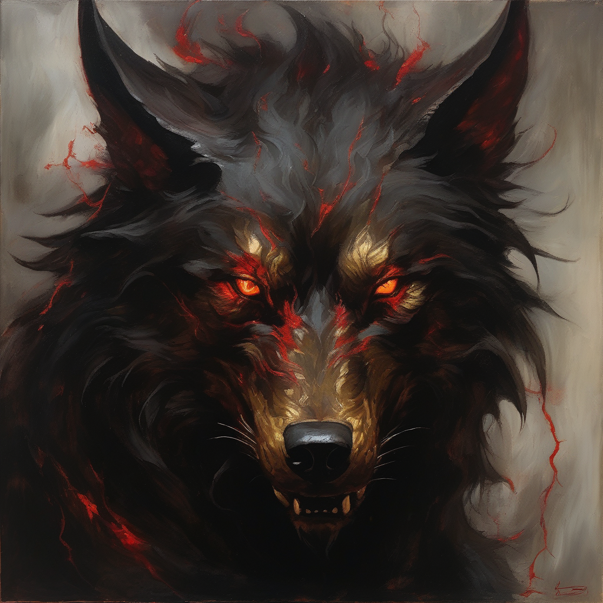
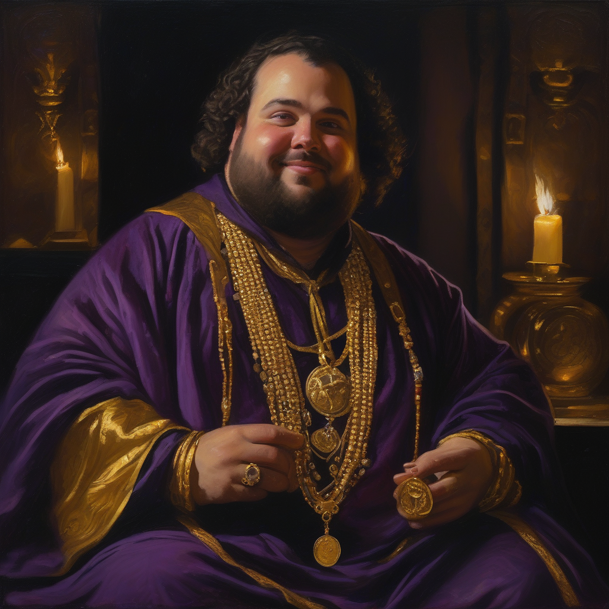
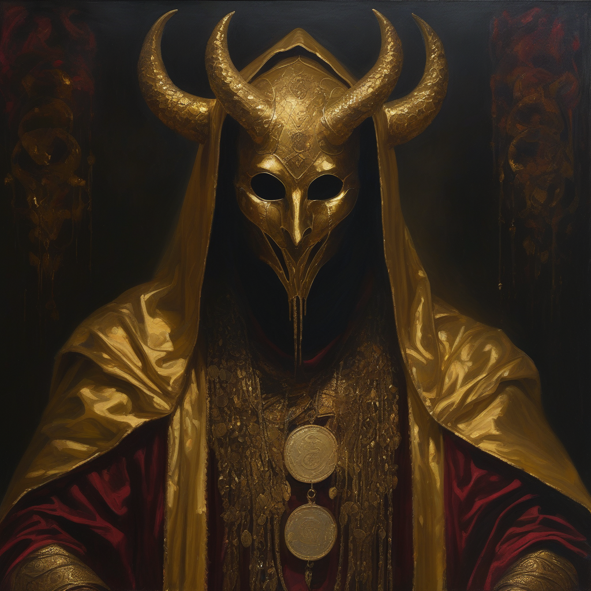

“Sua sede de sangue está apenas começando. A Ira não é barata, inquisidor.”

“Hmmm, 20 moedas? Isso não é nem um começo para alguém que tem um futuro brilhante. Que tal 50?”
O que você está se tornando
Veias escuras pulsando nos braços.
Poder: força brutal e golpes que ninguém consegue aparar.
Preço: +50% de Ira em cada ato violento.

Poder: riquezas e acordos que ninguém mais conseguiria.
Preço: um pedaço da sua alma.
Em risco: Ira acima do limiar
56 / 100
??? · condição oculta